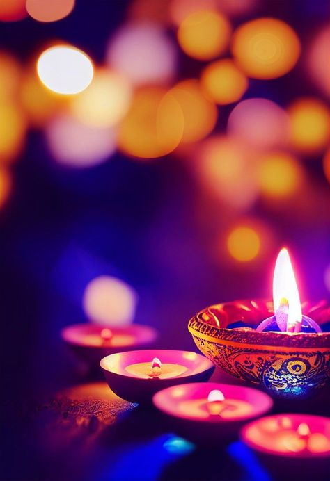
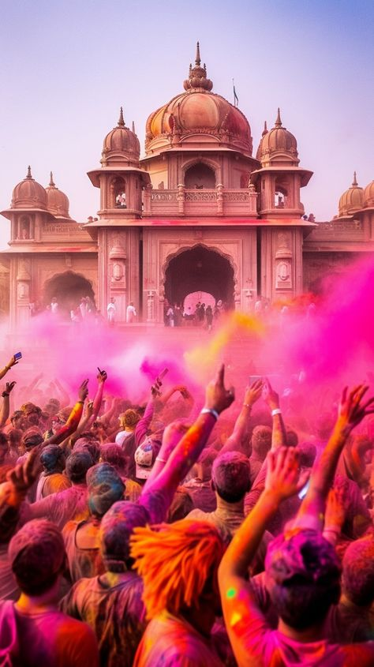
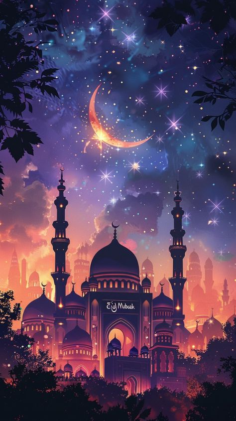
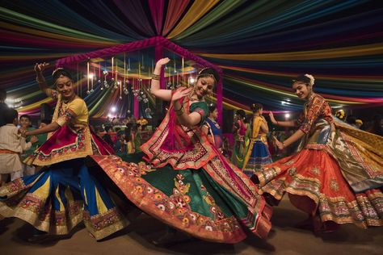
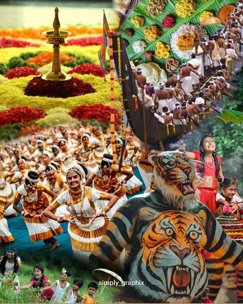

Diwali
Holi
Eid
Christmas
Navratri
Ganesh Chaturthi

Kumbh Mela

Independence Day

Republic Day

Onam
Rath Yatra

Discover the vibrant festivals celebrated across India!
Significance: The festival of lights symbolizes the victory of light over darkness and good over evil.
Celebration: Lighting diyas, bursting fireworks, and worshiping Goddess Lakshmi.
Significance: The festival of colors marks the victory of good over evil.
Celebration: Playing with colors, music, and feasting on sweets like gujiya.
Significance: Marks the end of Ramadan, a month of fasting and prayer.
Celebration: Offering prayers, sharing sweets, and giving charity.
Significance: Celebrates the birth of Jesus Christ.
Celebration: Decorating Christmas trees, exchanging gifts, and attending church services.
Significance: Celebrates the birth of Lord Ganesha.
Celebration: Bringing home Ganesha idols, performing aartis, and grand processions.
Significance: The largest spiritual gathering in the world.
Celebration: Taking a dip in sacred rivers, prayers, and spiritual discourses.
Significance: Celebrates India's independence from British rule on August 15, 1947.
Celebration: Flag hoisting, parades, and cultural events across the country.
Significance: Marks the adoption of the Indian Constitution on January 26, 1950.
Celebration: Grand parades, cultural performances, and award ceremonies.
Significance: Harvest festival of Kerala celebrating the homecoming of King Mahabali.
Celebration: Floral rangolis (Pookalam), traditional dances, and the famous Vallamkali (boat race).
Significance: The grand procession of Lord Jagannath in Puri, Odisha.
Celebration: Pulling the massive chariots of Lord Jagannath, Balabhadra, and Subhadra by devotees.
Significance: Marks the transition of the sun into the zodiac sign Capricorn, signaling the end of winter and the start of longer days.
Celebration: Flying kites, preparing sweets made of sesame and jaggery, and festive gatherings.